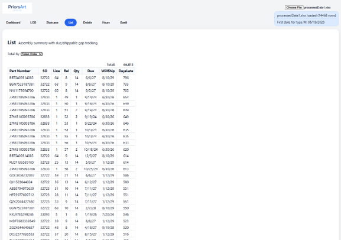

PriorsArt
PriorsArt Line Of Balance (LOB) is a tool to help manufacturers improve production visibility, action
purchase orders and work orders and clearly communicate status and expected completion dates internally and with customers.
Complex manufacturing businesses, especially those with low volume high mix and high component count assemblies struggle with visibility and planning, and many have poor on time delivery performance.
PriorsArt LOB solves this problem using a proprietary process taking standard ERP data, generating exploded bills of materials and identifying for specific sales orders the purchase orders, work orders and operation details required, determining status and allowing targetted action and attention.
A useful view is the LOB page, where any part number where sales orders exist is selected, and a matrix is shown of the exploded bill of materials, and supply source for each sales order of the materials. This is typically items from inventory, purchase order, or work orders. There is a selectable level of detail, ranging ffom a simple RYG status, through to detail of operations, resources and hours required to complete each sales order. A determined date (the Will Ship date) for when each sales order is able to be completed is shown based on material availablility and predicted work order completion dates.
The List page is a sorted list showing the gap between due dates and Will Ship dates for sales orders. This is able to identify future delinquencies, allowing other pages to show specific problems requiring attention. This can be selected to show gaps for specific sales orders, or to sum any gaps for all sales orders by part number.

The staircase page shows for a selected part number the cummulative quantity over time due for sales orders, and the corresponding will ship dates and any deliquency predicted. The graphical representation can be thought of as a vertical gap between lines showing the quantity delinquent, and a horizontal gap showing the timeframe of delinquency.
The Details page is a table based view of the LOB page, and it has the extra feature of allowing filters that are used by the Hours page. Based on the filter selection, the Hours page shours the standard hours required to complete outstanding operations. The can be useful to determine required resource levels. Typically the filter may be on a sales order due date, so as the Hours page shows the necessary hours per resource required before that sales order can complete.
The Gant page allows a specific sales order to be selected, and a gant chart is then shown for the operations and purchase orders required to complete that sales order.
PriorsArt provides software to interface with ERP, and is able to provide consulting services to assist with the usage of this product, and to take business actions to address delinquencies, pre-empting being late to custome demand.
Contact simonrcprior@gmail.com (later will be.. sales@priorsart.com) for more information.